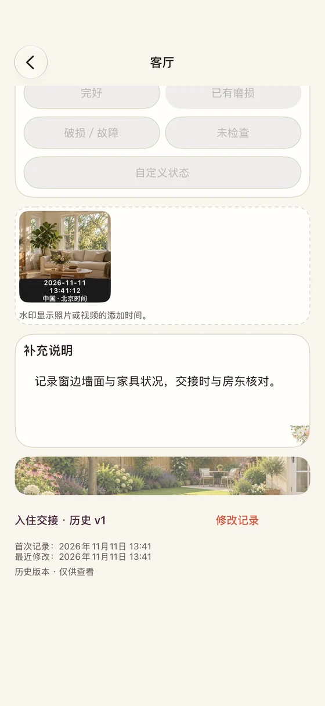
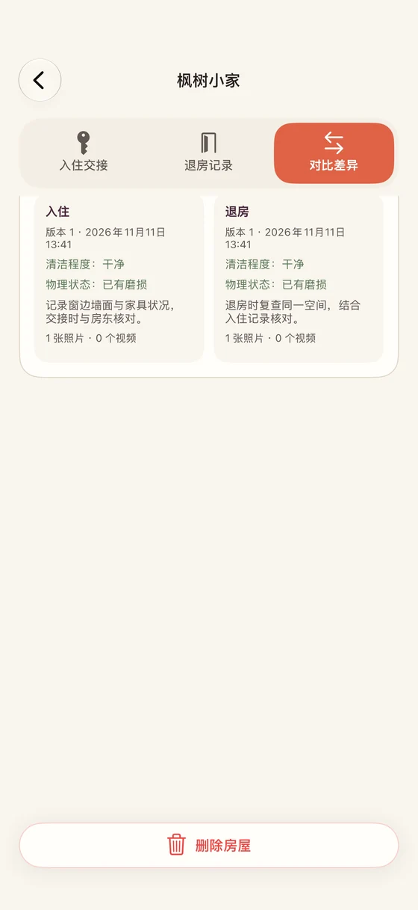

图文教程
租房入住验房清单：拍照、发报告和退租对比
拿到钥匙后应该拍哪些照片？先想想退租时要核对哪些位置。这里用 Stayframe 的示例房屋演示逐间记录、导出报告，以及退租时怎样回看。
1. 先拍房间全景，再记录已有磨损
添加房屋，选择实际租用的空间。为每个房间拍一张全景，再为已有的污渍、刮痕或破损拍近照。
把清洁度和物品状况分开记录。备注可以写成「客厅窗户下方墙面有擦痕」，方便退租时找到同一位置。


2. 预览入住报告，发给房东
在报告预览里检查房间、照片和备注是否齐全，再导出 PDF 或图片，用平时与房东沟通的方式发送。
视频附件可以单独发送。实际发出后，再在 Stayframe 中标记已发送，并保留房东的回复。

3. 退租时对照同一空间
交还钥匙前，从相近的角度重新拍照，把新照片放到同一房间的退租记录里。
打开房况对比，查看入住和退租两份记录。需要讨论某处差异时，可分享相关房间或差异报告。正式交接按租约和当地要求办理。


拿钥匙时可以照着做的清单
- 每个房间拍全景，已有痕迹再拍近照。
- 清洁度和墙面、地板、设施的状况分开写。
- 交接涉及钥匙、表计或共享空间时，也补拍照片或记下读数。
- 留一份已发送的报告，并保存房东的回复。